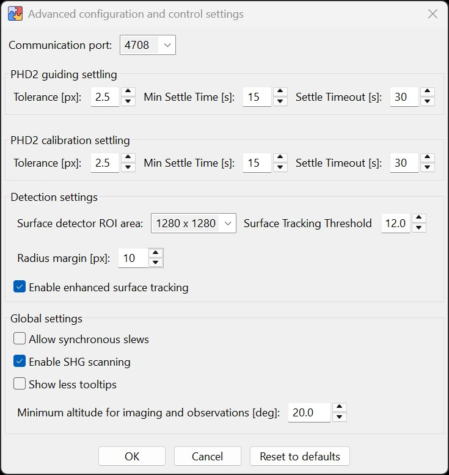

The Advanced Settings dialog provides access to additional parameters for configuring PHD2 guiding and calibration, detection behavior, and selected global application settings.
You can open this dialog from the Setup in the main menu. Adjustments here are typically not required for standard use and should only be made
if you need to fine-tune your setup or have been advised to do so by HelioMaker technical support. You can restore all advanced settings to their default
values by clicking the Reset to Defaults button.
Sequence-related options that were previously found in this dialog, such as delayed sequence start, frame-count versus time-limit mode,
and locking active sequence parameters, have moved to the Sequence Options dialog.

Communication Port
The communication port field defines the local network communication port used for HelioMaker connection with other components.
The default value is 4708. On first use, a Windows Firewall dialog may appear, requesting permission to allow communication
through this port. Granting this permission is recommended to ensure full functionality of HelioMaker.
If, for some unlikely reason, this port is already in use by other programs, or if there is a problem connecting HelioMaker
with either SharpCap Pro or PHD2, the user may try selecting a different port number from the dropdown list of available ports.
PHD2 Guiding Settling Parameters
Tolerance (px): The maximum allowable deviation in pixels from the target position for PHD2 to consider guiding as settled.
Min Settle Time: The minimum time (in seconds) for which the guiding error must remain within the specified tolerance.
Settle Timeout: The maximum time (in seconds) to wait for the guiding to settle. If this time is exceeded, an error will be reported.
PHD2 Calibration Settling Parameters
Tolerance (px): The maximum allowable deviation in pixels during the calibration process.
Min Settle Time: The minimum time (in seconds) for which the calibration error must remain within the specified tolerance.
Settle Timeout: The maximum time (in seconds) to wait for the calibration to settle. If this time is exceeded, an error will be reported.
Understanding Settling
Settling is the process in which PHD2 ensures that guiding has stabilized after making an adjustment, such as after dithering or starting guiding. During settling, PHD2 measures the error deviation from the target position and waits until the error falls consistently within the defined tolerance for at least the "Min Settle Time". If the error does not stabilize within the "Settle Timeout", PHD2 completes the settling process and attempts to resume guiding.
If the settling process takes too long, it is advised to:
Reduce the Min Settle Time or Settle Timeout, or
Increase the Tolerance.
Adjusting these parameters should be done with caution and with a clear understanding of PHD2 settling principles, as described in the PHD2 documentation. Improper configuration may result in insufficient settling or prolonged delays.
Detection Settings
Surface Tracking Tolerance (px): Previously called Surface Tracking Threshold,
this setting is now expressed in pixels. It controls how much the matched surface features may
jitter before the tracking algorithm replaces its reference. The default is 3.5 px.
Raise the tolerance for long focal lengths or unsteady seeing; lower it for short focal lengths
when you want a tighter limit on feature jitter. Existing saved thresholds are converted to the
new units automatically.
Enable enhanced surface tracking: Enables improved tracking of solar or lunar surface features. This option is on by default and generally
should not be changed unless you are troubleshooting guiding issues. It improves detection reliability and guiding stability for surface-feature guiding,
but uses more CPU. This option does not relate to the Dynamic Target Tracking tool and does not affect the
physical mount tracking rate. The two features work independently and may be enabled at the same time. Avoid changing this setting while guiding is active.
The pixel tolerance controls when the surface tracking reference is replaced. The
lock sensitivity slider in Find & Track controls the
feature requirement for establishing a lock. The PHD2 settling tolerances above control when guiding
or calibration is considered settled.
Surface ROI size and full-disk radius tolerance are no longer configured in Advanced Settings. Resize a
Surface Features ROI with the mouse wheel while the ROI tool is active in Find & Track. Full-disk radius
tolerance can be adjusted with the mouse wheel while its temporary inner and outer limit circles are visible.
These direct controls make the effect of each adjustment visible on the current frame.
Global Settings
The remaining global settings in this dialog control application-wide behavior such as synchronous slew fallback,
SHG scanner availability, reduced tooltip display, and mount safety limits. Sequence workflow options are documented
in Sequence Options.
Allow synchronous slews: Allows HelioMaker to use a blocking synchronous slew command as a fallback when an asynchronous
mount slew command is not available or fails. Leave this disabled unless your mount or driver needs this fallback.
Enable SHG scanning: Enables the experimental SHG Scanner feature. When disabled, HelioMaker
hides the SHG Scanner button in Dynamic Target Tracking and the SHG entry in the Tools menu. This can be safely disabled by users who do
not use SHG hardware.
Show less tooltips: Reduces on-screen tooltip noise for experienced users. This suppresses many main-window input and
button tooltips and disables click-triggered rich tooltips, such as selected Session panel row hints and moon orientation hints. Status
indicators and menu help remain available.
Minimum altitude for imaging and observations: Sets the minimum target altitude used by Dynamic Target Tracking, the
Ephemeris Planner, mount slew controls, and related imaging or observation workflows. Planned objects can be loaded into DTT only when the
current time is inside the plan window and the object is above this altitude. In builds with mount tracking limits enabled, this value is also
used by the live mount-altitude safety stop.
Reset to Defaults
The Reset to Defaults button restores all fields in this dialog to their default values.